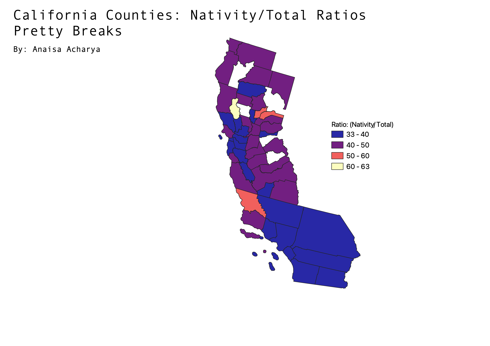
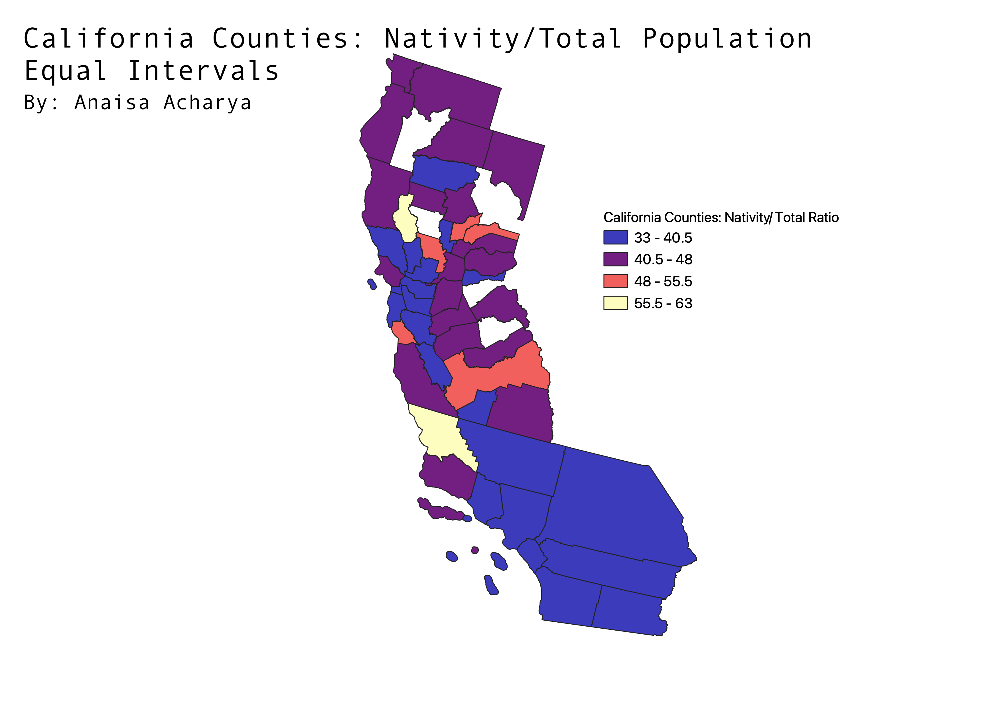
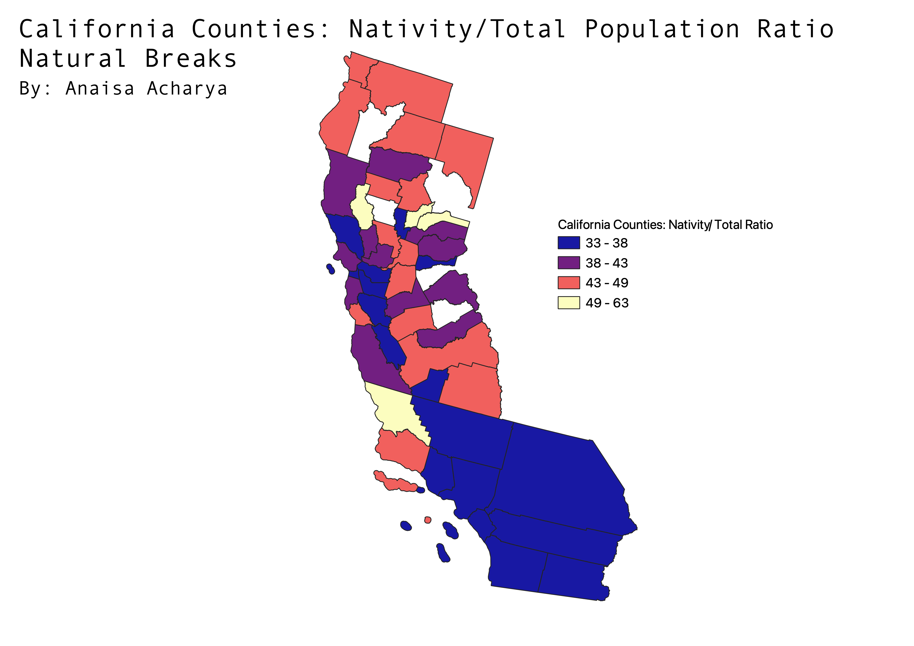
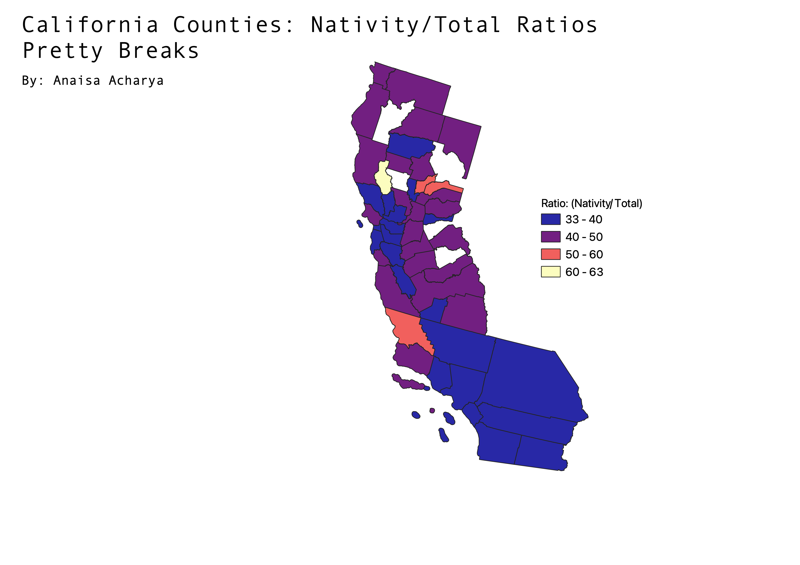
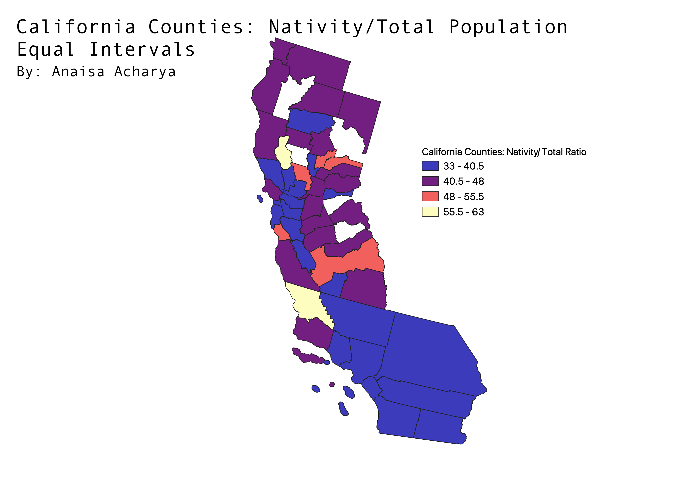
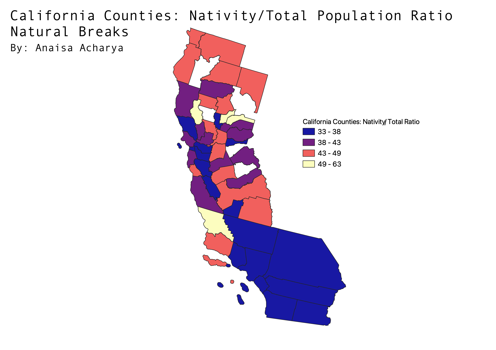

HW 6
This map focuses on the nativity in California, specifically individuals who are completely native to an Asian country.
The data utilized is from 2015. As you can see a large part of California has few native born people.
It is important to note that the counties not filled were null data.
 Homework 6: CSV File
Homework 6: Geojson File
The ratio I created was using nativity population (amount of people born in an Asian country) over the total population of each county.
This shows the percentage of people that are native using a ratio.

Using the pretty breaks is effective because it has a wide variety of breaks as depicted on the map.
The only downfall is that the breaks can vary from a width of 3 to width of 10.

Using the equal intervals is good because it creates equal 4 classes of intervals and makes the data easier to read.
It also has a good variety of classes shown on the map. Personally, I see little to no issues with this format of the ratio.

Using the natural breaks is effective because it has a wide variety of breaks as depicted on the map.
The only downfall is that the breaks can vary from a width of 5 to width of 14.
Homework 6: CSV File
Homework 6: Geojson File
The ratio I created was using nativity population (amount of people born in an Asian country) over the total population of each county.
This shows the percentage of people that are native using a ratio.

Using the pretty breaks is effective because it has a wide variety of breaks as depicted on the map.
The only downfall is that the breaks can vary from a width of 3 to width of 10.

Using the equal intervals is good because it creates equal 4 classes of intervals and makes the data easier to read.
It also has a good variety of classes shown on the map. Personally, I see little to no issues with this format of the ratio.

Using the natural breaks is effective because it has a wide variety of breaks as depicted on the map.
The only downfall is that the breaks can vary from a width of 5 to width of 14.